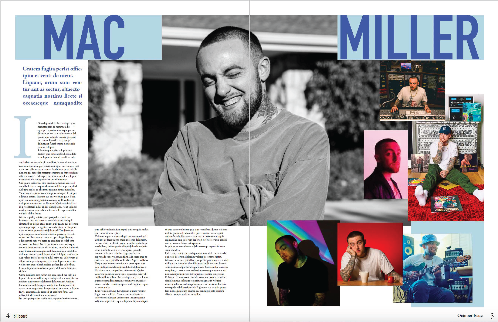
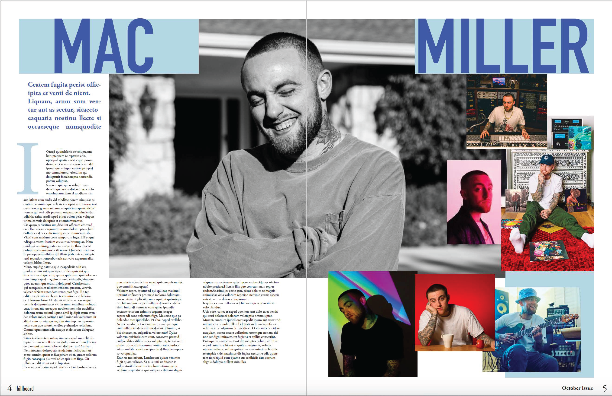

Billboard Music Magazine
For this project I used Indesign to make a magazine based on one that already exists. I chose Billboard as it is a magazine company that I am farily familiar with. I used inspiration from common layouts of real Billboard magazines combined with layouts that I felt looked appealing to consumers.
 
